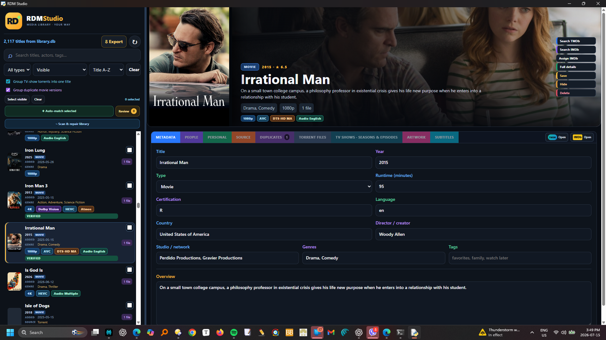
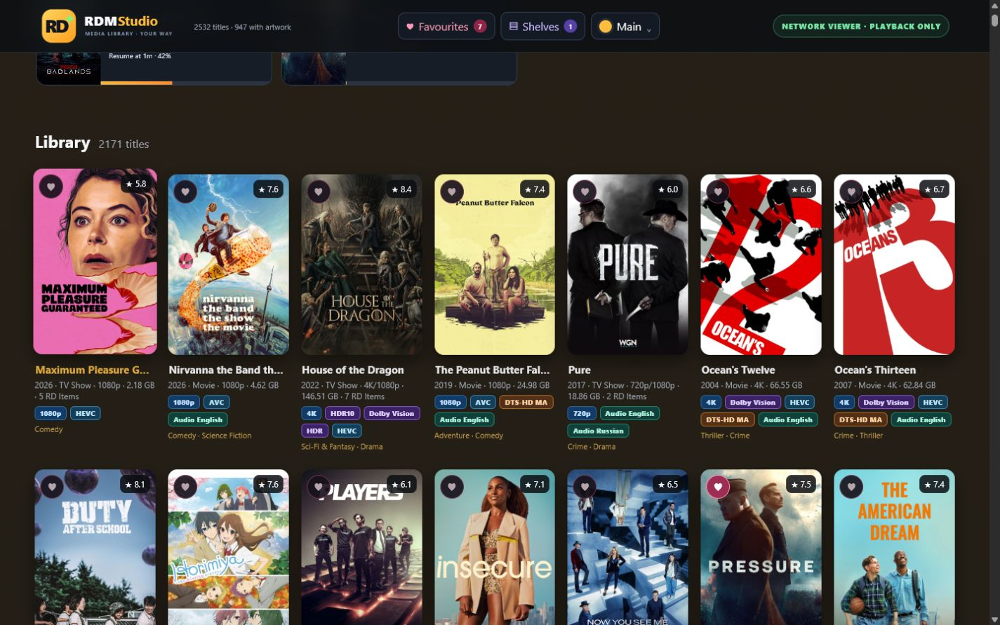
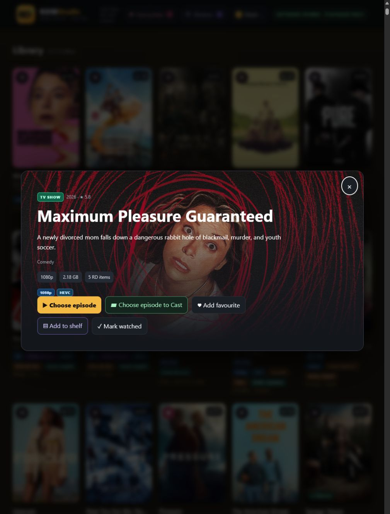
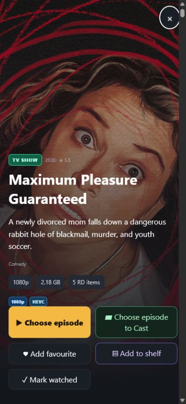
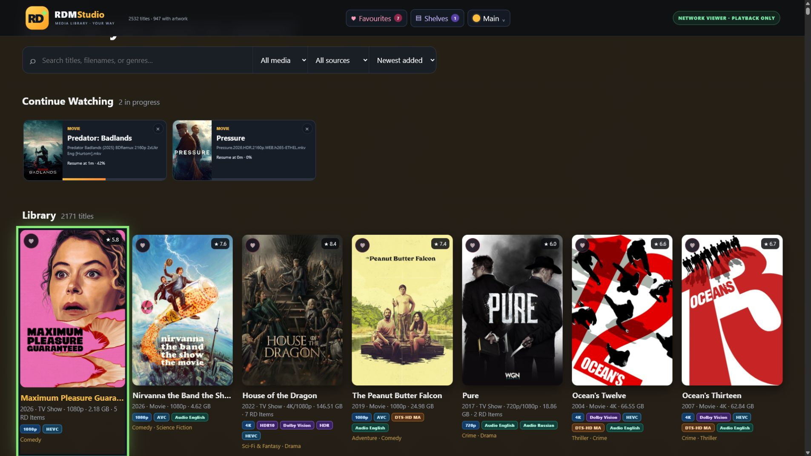

Your Real-Debrid library. Finally feels like yours.
RDM PlayStudio transforms torrents and downloaded files into a rich, searchable collection with posters, fanart, seasons, episodes, profiles and playback across your home.
RDM PlayStudio combines account synchronisation, metadata, editing, playback and personal organisation in one focused experience.
✦
ENRICHMENT
Turn filenames into a real collection
Automatically add posters, fanart, ratings, genres, cast, director, runtime, languages and technical media details from trusted metadata services.
TMDb artwork and details
IMDb search and exact assignment
Bulk automatic matching with review
▦
TELEVISION
Seasons and episodes that make sense
Group packs and separate episode torrents under one show, choose versions, name episodes and spot missing entries.
▶
PLAYBACK
From browser to VLC automatically
Use direct streams, Real-Debrid playback, local transcoding, VLC or Google Cast with a sensible fallback path.
◎
PERSONAL
Profiles that remember
Keep favourites, watched status and Continue Watching separate for everyone in your home.
▤
COLLECTIONS
Shelves, franchises and exports
Create watchlists and custom shelves, browse automatic franchises, then export polished websites, cards, PDF-ready lists or Excel.
⌂
HOME VIDEOS
Your own films belong here too
Catalogue family movies and private series without TMDb or IMDb. Add your own details and artwork—or capture a poster and fanart frame directly from the video.
Advanced library editor

Total control
Fix anything. Without touching the database.
Correct a wrong match, merge duplicates, split a collection torrent, edit actors and tags, replace artwork, hide clutter or safely delete the original Real-Debrid item.
Bulk repairDuplicate rankingCustom artworkSubtitle searchMovie and TV badgesSafe backup first
More than an online catalogue
Home videos, private series and collections that are truly yours.
Not every recording has an IMDb page—and a franchise is more useful when it looks like a real shelf. PlayStudio gives both a proper home without moving or deleting the original Real-Debrid files.
⌂ HOME VIDEO STUDIO
Catalogue the films nobody else can.
Create a Home Movie or Home TV series with your own title, people, tags, description and artwork. Capture a poster or cinematic background from the video itself, and keep private titles out of online matching.
Home MovieHome TV seriesFrame captureCustom artwork
⌂ PRIVATE SERIES BUILDER
Turn separate recordings into one show.
Select several uncategorised videos, give the series a name and choose the starting season. Their existing filenames become editable episode titles and the individual cards disappear into one organised show.
Select the recordings
Choose Home TV selected
Edit season, episode number and title
◆ COLLECTIONS
Franchises appear automatically. Your shelves are limitless.
TMDb franchises such as James Bond, The Matrix and Mission: Impossible are grouped automatically. Select any assigned movies or shows to create a manual collection, mix media types, and add a custom collection poster.
The Collections button is available in the desktop Studio and the local or 192.168 home-network player. Open a visual shelf, choose a member, then edit it in Studio or play it on Windows, iPhone, iPad or Google TV.
One databaseCollections, profiles and progress stay synchronized across your home.
DMM integration
Missing an episode? Want a better version?
Open Debrid Media Manager directly from the assigned movie, TV season or missing-episode report. Choose a cached release, add it to the same Real-Debrid account, then sync PlayStudio.
Open DMMThe IMDb ID takes you to the correct movie or TV season.
Add a cached releaseChoose a missing episode, 4K upgrade or alternative encode.
Sync PlayStudioEpisodes join the show and better versions are ranked together.
DMM is an independent external service. RDM PlayStudio never exposes your local database to it.
RDM PlayStudio · Advanced editor
DMMFind cached releases
✓Sync completeMissing episodes and better versions return to the correct title.
See it in action
Designed for the collection, not the configuration.
Every screen is made to stay clear even when your Real-Debrid account contains thousands of items.
More than a media editor
Your collection is meant to be watched.
RDM PlayStudio does not stop after matching titles and posters. Browse, choose a movie or episode, press Play, and continue across Windows, iPhone, iPad and Google TV on your home network.
1 Organize→2 Choose a version→3 Play→4 Resume anywhere
Windows · Chrome
Your complete library and player.
Edit metadata, pick the best torrent version, then play in the browser—with automatic transcoding and VLC fallback when needed.
▶ Browser playerVLC fallbackContinue Watching
RDM PlayStudio · Home Library

iPad · Full screen
A sofa-friendly library.
Install it on the Home Screen, browse the full collection and resume a movie or TV episode in a touch-friendly player.
Home-screen appTouch controlsProfiles


iPhone · In your pocket
Find it. Tap it. Play it.
Search your library, choose a season or episode and launch playback without returning to the Windows PC.
Movies & episodesResume progress
Google TV · Playback only
Built for the biggest screen.
A large, remote-friendly interface puts Continue Watching first. Play through VLC, direct stream or Google Cast from your trusted home network.
Remote friendlyVLCGoogle Cast

One private library. Four screens. One Play button.Your Windows PC hosts it; your devices browse, play and resume it.
Built for Windows 11
Simple requirements. Serious capability.
What you need
Windows 11 64-bit PC
4 GB RAM minimum; 8 GB recommended
Real-Debrid account and private token
TMDb key for artwork and enrichment
Internet and a trusted home network
Recommended extras
VLC for the widest format support
Strong 5/6 GHz Wi-Fi or Ethernet
5–20 GB free for artwork and transcodes
OMDb for IMDb search
OpenSubtitles for subtitle downloads
◆
Your library stays yours
The database and cached artwork stay on your PC. API credentials are protected by Windows encryption. Home-network access is off until you choose to enable it.
Meet your collection again
Try RDM PlayStudio on Windows 11.
The trial is designed for up to 20 library titles, giving you room to test matching, artwork, TV grouping, playback and exports before activating the full edition.